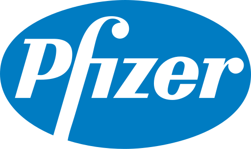

Pfizer-BioNTech COVID-19 Vaccine
Type: mRNA VaccineDosages: 2
EffectivenessMeasure of how well a vaccine works in real life scenarios.: 90% (CDC)
EfficacyMeasure of how well a vaccine works in controlled conditions such as a laboratory.: 94.6%
Moderna COVID-19 Vaccine
Type: mRNA VaccineDosages: 2
EffectivenessMeasure of how well a vaccine works in real life scenarios.: 90% (CDC)
EfficacyMeasure of how well a vaccine works in controlled conditions such as a laboratory.: 94.1%
 Janssen (Johnson & Johnson) COVID-19 Vaccine
Janssen (Johnson & Johnson) COVID-19 Vaccine
Type: Non-replicating Ad26 Viral VectorDosages: 1
EffectivenessMeasure of how well a vaccine works in real life scenarios.: --
EfficacyMeasure of how well a vaccine works in controlled conditions such as a laboratory.: 66.3%
FAQ
The mRNA Vaccine (Pfizer + Moderna)
What is an mRNA vaccine?The mRNA vaccine is a new type of vaccine that instructs our body to create a harmless part of the actual virus, In doing so, the body's immune system learns to recognize this harmless part and attacks any foreign objects containing it. In the case of COVID-19, a specific part of the SARS-CoV-2 called the spike protein is targeted.
What is mRNA?
In very simple terms, mRNA is a set of instructions that tells your body how to make proteins. Every person has mRNA in their body, or else we would not exist.
Is mRNA natural? Is it safe?
mRNA is produced naturally by your body and is part of the reason why you exist. As mRNA is simply a set of instructions, it can be good or bad. As long as those instructions are correctly written without any intent to harm, then the mRNA is very safe.
I don't like the sound of injecting foreign mRNA into my body.
Rest assured, after your body makes the protein using the mRNA, the mRNA will eventually degrade and can no longer be used. That means the mRNA will not stay in your body permanently. This also happens with the mRNA naturally produced in your body; however, the difference is that your body can remake your natural mRNAs. The mRNA you get from the mRNA vaccine is not remade after the shots.
Can you give me an analogy of how this whole thing works?
Sure. Imagine yourself looking to buy a used chair online. You find a nice chair (protein) that was part of a themed furniture set (virus), but the seller is only selling the chair.
After buying it and receiving the package, you open it to find the manual book (mRNA) and the parts to build the chair. After a couple hours, you finally finished assembling the chair (protein).
Later, you go to a friend's house and found out that your friend also owns the same chair (protein). By knowing that your friend owns the same chair, you can guess that he also owns the entire furniture set (virus)!
Now, in a strange turn of events, it turns out the reason you wanted to buy that chair is so you can study it, find it, and destroy it along with the entire furniture set. So, you destroy your friend's chair and furniture set.
He probably isn't your friend anymore... but you accomplished what you set out to do. Congratulations!
Johnson & Johnson
I have heard the Johnson & Johnson vaccine is the more "traditional" type of vaccine. Can you explain?The J&J vaccine uses the traditional viral vector method, where the DNA of the COVID-19's spike protein is placed in the inactivated virus. Injection of this inactivated virus causes a complicated series of steps that eventually leads to the creation of the harmless spike protein. Sounds familiar? From there, your body mounts an immune resposne against the spike protein, protecting your body from the actual COVID-19 virus.
Okay, that's great and all, but you're still injecting a virus in me. How is this safe?
The keyword is "inactivated". Because we do not scienfitically consider viruses to be "living", we simply say they are "inactivated". However, for the purposes of understanding why this is safe, we can say that the virus is technically "dead" and cannot do its original intended function of making people ill. As we know with all dead things, they cannot simply come back to life to haunt us except in movies.
In addition, we are NOT using an inactivated COVID-19 virus. We are using another virus called the adenovirus.
I just did some research and read that the inactivated virus is simply modified.
Like clipping the wings of a bird to prevent them from flying, the inactivated virus is also "clipped" from doing its original functions.
Other Vaccine Misconceptions
I don't want to get the vaccine because its development were rushed compared to other vaccines. It's not safe.The biggest difference between this vaccine and most other vaccines is that COVID-19 is a pandemic that has negatively affected everyone's lives in so many different ways. As a result, we have a vast abundance of resources and manpower that other vaccine developments could not have to get back to normality. In addition, vaccine research for coronavirus is not a new endeavor and has been worked on for many decades.
The vaccines don't actually work. There are many people who got them and still caught COVID-19.
While this is true, the vaccine never guaranteed a 100% success rate. In fact, the clinical trials of these vaccines show that a small percent of vaccinated patients will still catch the virus.
Reasons people may still catch the virus despite being vaccinated include a weak immune system or a virus variant that that your body's immune system wasn't fully prepared to fight against.